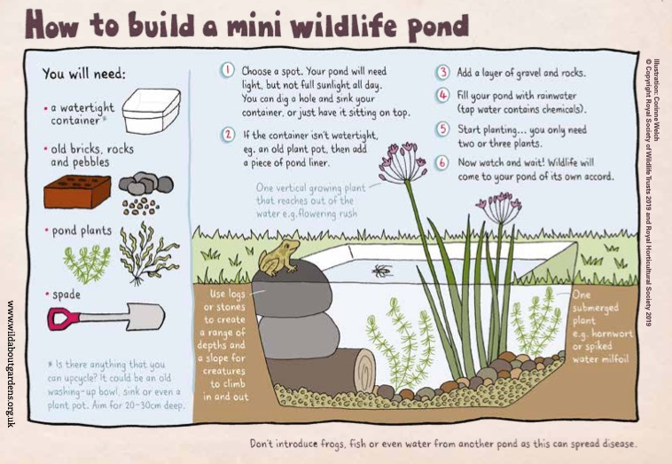

Building
a minipond

Ponds are wonderful for wildlife and every
garden should have one. You don't need a lot of space - even
an old bowl sunk in the ground will provide a home for aquatic
insects and amphibians, as well as being visited by birds,
which can be watched drinking and bathing.
Even if you already have a pond in the garden, children will
get great fun out of building one of their very own, and you
can be sure that pond life will appear quickly if there is
another pond nearby.
The diagram on the left, from the Wildlife
Trusts and the RHS, shows how to do it. Pick a spot
which is not too shady, and not underneath a tree which will
drop leaves into it in the autumn. Dig a hole in which to sink
your container. Put some gravel and stones in the bottom. It
is important to have one object which protrudes above the
water surface so that any air-breathing creatures which visit
the pond (e.g. frogs or newts) or might fall in (e.g. mice)
can climb out again.
It is best to fill the pond with rainwater. Can your young
naturalist devise a way of channeling rain into their pond so
as to fill it as quickly as possible? It is generally advised
not to transfer in creatures, fish or mud from another pond in
case disease is introduced. In any case, it is interesting to
see what will arrive without any help from humans, and how
long it will take. You could, however, buy a plant or two from
a local nursery with an aquatics section. An underwater
oxygenating plant will be good for the health of the pond and
have the bonus that children can actually see the
little bubbles of oxygen produced on a sunny day. It is best
not to have fish in a wildlife pond, since they will eat
insects, tadpoles etc, so the diversity of creatures in the
pond will be reduced.
Recording the building of the pond and subsequent developments
as life arrives there in a Nature
Journal will add to the fun. You could take some
photographs which can be stuck into the journal. When it comes
to identifying creatures and plants associated with ponds,
links to a variety of identification guides, as well as to
further detailed advice on building one, can be found here.
These guides may also be useful if you visit a pond or river
on trips out with your grandchildren. A magnifying glass will be useful
for studying the creatures which live in and around your pond.